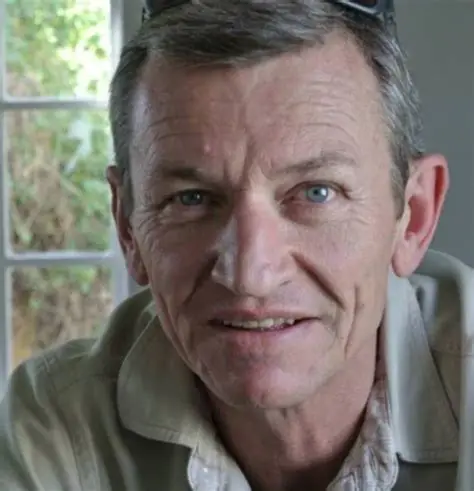

Entity Directory · ZA-DIVERGENT
Entities
Persons and institutions referenced across published investigations. Each entry links to a profile with associated case files and reporting.

institution
World Health Organization
UN specialised agency responsible for international public health. Primary authoritative source for disease outbreak news and global health emergency declaratio…
organization
MEGA (mega.nz)
Cloud storage and file hosting service headquartered in Auckland, New Zealand. Offers 20GB free storage with end-to-end encryption. Has documented history of cr…
MI
organization
Meta Platforms Inc
Global technology company operating Instagram and WhatsApp. Compelled by Gauteng High Court to disclose subscriber data for 60+ accounts distributing child sexu…

institution
CDC Health Alert Network
US Centers for Disease Control and Prevention emergency broadcast system. Issues Health Alert Network (HAN) advisories for public health threats including inter…
person
Friedrich Kraft
CEO of both 3xK Tech GmbH and Plainproxies. Identified by KrebsOnSecurity (January 2026) as the operator of proxy infrastructure linked to the Kimwolf botnet. P…
D(
organization
Digital Law Company (DLC)
South African digital rights and social media law firm. Led the urgent High Court application against Meta. Founded/led by Emma Sadleir.
ES
person
Emma Sadleir
South African social media law expert leading the Digital Law Company. Spearheaded the urgent High Court application against Meta for CSAM data disclosure.

person
Sindiso Magaqa
Former ANC Youth League Secretary-General. Murdered 2017 in what investigators describe as a political assassination. Subject of the Magaqa murder probe. Confir…
organization
Plainproxies
Residential proxy service operated by Friedrich Kraft. Distributed the ByteConnect SDK through devices infected by the Kimwolf botnet (2 million Android TV boxe…
other
Kimwolf Botnet
Botnet that infected over 2 million unofficial Android TV streaming boxes. Compromised devices were enrolled as proxy relays via the ByteConnect SDK, distribute…
JM
person
Judge Mudunwazi Makamu
Judge of the Gauteng Division of the High Court, Johannesburg. Issued the consent order compelling Meta to disclose subscriber data in the CSAM case.

government
SADC Health Ministers Meeting
Southern African Development Community inter-governmental body coordinating regional health policy, disease surveillance, and cross-border health emergency resp…

person
Vusimuzi "Cat" Matlala
Pretoria businessman, "Tender King". Secured irregular R360m SAPS Medicare24 tender without vetting. Arrested March 2026, tied to 80 corruption cases per SAPS i…

government
DRC Ministry of Health
Democratic Republic of Congo national health authority. DRC is the primary SADC-adjacent disease vector corridor — mpox, cholera, and Ebola outbreaks in eastern…
media
ProMED Mail
Program for Monitoring Emerging Diseases. Open-access early-warning infectious disease surveillance system operated by the International Society for Infectious …

person
Fannie Masemola
National Police Commissioner. Suspended by President Ramaphosa (April 2026) pending outcome of State vs Matlala and 15 others. Served with warrant for involveme…

person
Fadiel Adams
Member of Parliament, National Coloured Congress (NCC). Western Cape. Arrested May 2026 for alleged interference in Sindiso Magaqa murder investigation. Magaqa …

institution
UNFPA Africa Regional Office
UN Population Fund regional office covering sub-Saharan Africa. Monitors humanitarian health conditions including reproductive health crises across conflict-aff…

person
Godfrey Lebeya
National Head, Directorate for Priority Crime Investigation (HAWKS/DPCI). Publicly confirmed position. Cited in corpus regarding HAWKS enforcement posture and a…

person
Richard Shibiri
SAPS Organised Crime unit boss. Dismissed during Madlanga Commission fallout (June 2026). Commission heard he had an alleged personal interest in Matlala's SAPS…

person
Brown Mogotsi
Political operative linked to both the Matlala SAPS tender probe and the Phala Phala farm robbery saga. Denied bail (June 2026) on charges relating to an allege…
institution
Magisterial Court Musina
Musina Magistrate's Court — district-level judicial institution in Musina, Limpopo, under the South African Magistrates' Courts system. Handles criminal cases (…
person
Edgar Maroto
Edgar Maroto, a 42-year-old Zimbabwean truck driver, was sentenced to 20 years in a South African prison for illegally possessing and attempting to smuggle expl…
F(
government
Film and Publications Board (FPB)
South African government regulatory body for content classification and online distribution regulation, including child sexual abuse material.

institution
National Prosecuting Authority
National Prosecuting Authority (NPA) -- the state body responsible for instituting criminal proceedings. Named in reporting on the Cat Matlala R360m tender capt…

institution
South African Police Service
South African Police Service (SAPS) -- the national police force. Central institution in the Matlala tender capture case, with senior officers including the Nat…

institution
Directorate for Priority Crime Investigation
Directorate for Priority Crime Investigation (DPCI / HAWKS) -- SAPS elite anti-corruption and organised crime unit. Lead investigative body in the Limpopo munic…

person
Cyril Ramaphosa
President of the Republic of South Africa. Acted to suspend National Police Commissioner Fannie Masemola in April 2026 pending the outcome of State vs Matlala a…

institution
Eskom
State-owned electricity utility. Subject of a R21bn diesel procurement fraud investigation examining irregular contract awards within its open-cycle gas turbine…

person
Martha Rantsofu
Emfuleni Local Municipality official. Murdered (date unclear from corpus). Family speaking to media as investigations continue (Daily Maverick, May 2026). Possi…

institution
National Institute for Communicable Diseases (South Africa)
South African national public health institute responsible for communicable disease surveillance, including SADC regional pathogen reporting (HealthMap-tracked …

person
John Grobler
Investigative journalist (Namibia/Oxpeckers Investigations). Byline author on Orange Basin oil and gas governance reporting -- "Namibia's oil rush: Who benefits…
person
Minenhle Mavuso
Identified in amabhungane investigation as front company operator in Eskom R21-billion diesel procurement fraud. Age 24 at contracting (2024). BA Psychology gra…

person
Feroz Khan
Senior SAPS officer. Denied role in the release of gold-theft suspect Downes; named during Madlanga Commission testimony on the unravelling KZN HAWKS cocaine ca…

person
Julius Mkhwanazi
Named suspect arrested by SAPS Madlanga anti-corruption task team (Limpopo) for fraud and corruption, April 2026. Possible municipal official. Single source — a…
organization
3xK Tech GmbH (AS200373)
German hosting provider operating under ASN AS200373. CEO Friedrich Kraft also operates Plainproxies, a residential proxy service linked to the Kimwolf botnet (…